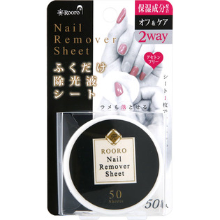

返回列表
产品名称：Ｒｏｏｒｏ ふくだけ除光液シート

柳瀬 Ｒｏｏｒｏ ふくだけ除光液シート ５０枚入
メーカー 柳瀬
JANコード 4949130137520
商品の特徴
●除光液とコットン、更に保湿成分が１つになったシートです。
●ノンアセトンで爪に優しくいい香りがします。
●持ち運びにも便利でいつでもどこでも簡単にご使用頂けます。
成分・分量
【成分】
イソプロパノール、グリセリン、水、プロパンジオール
用法及び用量
【使用方法】
・シートを１枚取り出し、爪を軽く押さえてネイルポリッシュ全体に液をなじませた後、１本１本ふき取るようにご使用ください。